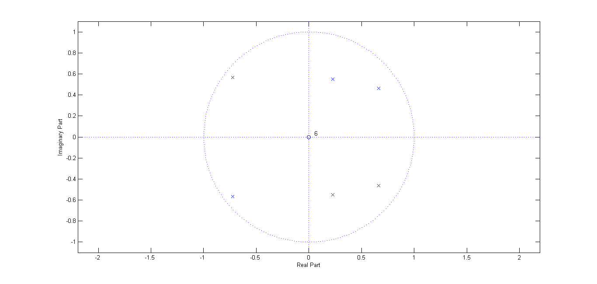
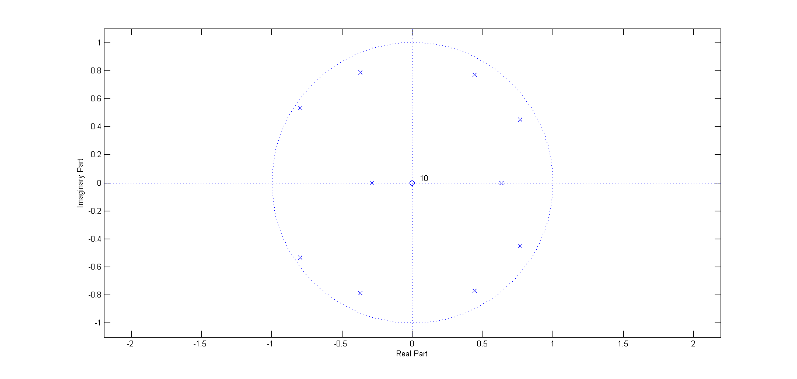
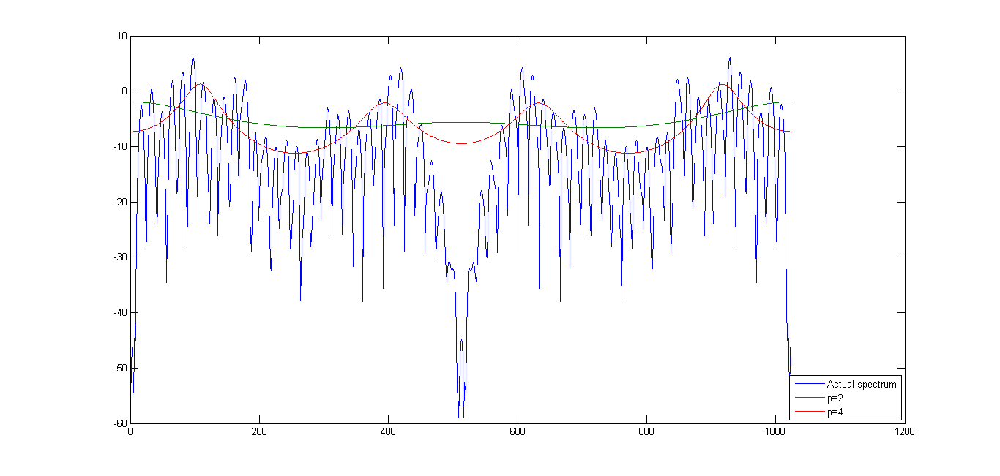
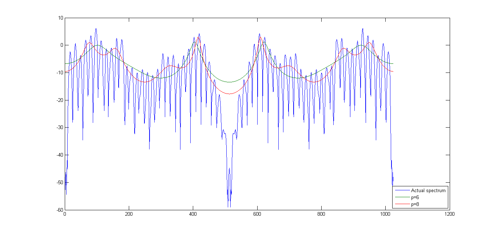
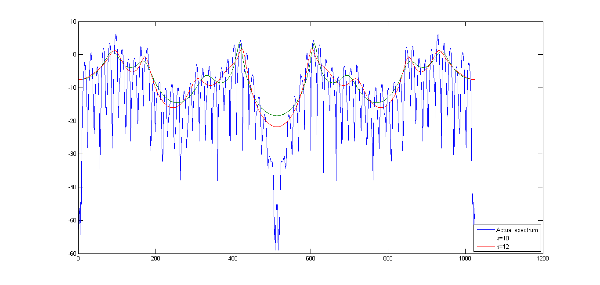
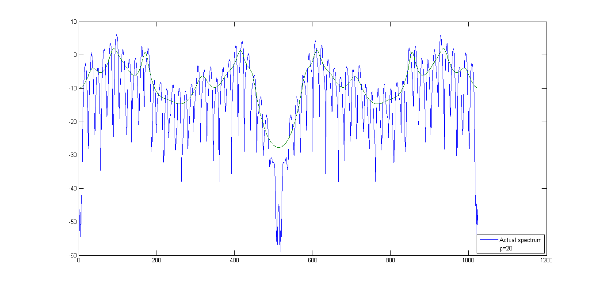
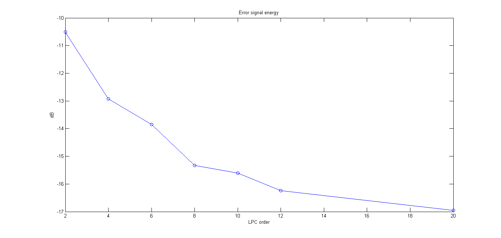

Sa = wavread('a.wav');
Ls = length(Sa);
S = zeros(Ls,1);
S(1) = Sa(1);
S(2:end) = Sa(2:end) - 0.975*Sa(1:end-1);
Lw = 0.03 * 8000;
w = hamming(Lw);
Sw = zeros(Lw,1);
strt = floor(Ls/2-Lw/2);
Sw(1:end) = S(strt:strt+Lw-1).*w;
spect_a = mag2db(abs(fft(Sw, 1024)));
p = 20;
r=zeros(p+1, 1);
for i=0:p,
r(i+1) = Sw(1:Lw-i)'*Sw(i+1:Lw);
end
[a2 e2] = levinson(r, 2);
[a4 e4] = levinson(r, 4);
[a6 e6] = levinson(r, 6);
[a8 e8] = levinson(r, 8);
[a10 e10] = levinson(r, 10);
[a12 e12] = levinson(r, 12);
[a20 e20] = levinson(r, 20);
figure(1)
zplane(e6, a6);
figure(2)
zplane(e10, a10);
Pspec=zeros(1024, 1);
p=2;
e=e2;
a=a2;
for k=0:1024,
w1 = k/1024 * 2 * pi;
expo = exp(-(0:p)*1i*w1);
Pspec(k+1) = e/(abs(expo*a')).^2;
end
Pspec2 = sqrt(Pspec);
Pspec=zeros(1024, 1);
p=4;
e=e4;
a=a4;
for k=0:1024,
w1 = k/1024 * 2 * pi;
expo = exp(-(0:p)*1i*w1);
Pspec(k+1) = e/(abs(expo*a')).^2;
end
Pspec4 = sqrt(Pspec);
Pspec=zeros(1024, 1);
p=6;
e=e6;
a=a6;
for k=0:1024,
w1 = k/1024 * 2 * pi;
expo = exp(-(0:p)*1i*w1);
Pspec(k+1) = e/(abs(expo*a')).^2;
end
Pspec6 = sqrt(Pspec);
Pspec=zeros(1024, 1);
p=8;
e=e8;
a=a8;
for k=0:1024,
w1 = k/1024 * 2 * pi;
expo = exp(-(0:p)*1i*w1);
Pspec(k+1) = e/(abs(expo*a')).^2;
end
Pspec8 = sqrt(Pspec);
Pspec=zeros(1024, 1);
p=10;
e=e10;
a=a10;
for k=0:1024,
w1 = k/1024 * 2 * pi;
expo = exp(-(0:p)*1i*w1);
Pspec(k+1) = e/(abs(expo*a')).^2;
end
Pspec10 = sqrt(Pspec);
Pspec=zeros(1024, 1);
p=12;
e=e12;
a=a12;
for k=0:1024,
w1 = k/1024 * 2 * pi;
expo = exp(-(0:p)*1i*w1);
Pspec(k+1) = e/(abs(expo*a')).^2;
end
Pspec12 = sqrt(Pspec);
Pspec=zeros(1024, 1);
p=20;
e=e20;
a=a20;
for k=0:1024,
w1 = k/1024 * 2 * pi;
expo = exp(-(0:p)*1i*w1);
Pspec(k+1) = e/(abs(expo*a')).^2;
end
Pspec20 = sqrt(Pspec);
figure(3);
plot((1:1:1024), [spect_a(1:1024) mag2db(Pspec2(1:1024)) mag2db(Pspec4(1:1024))])
legend({'Actual spectrum', 'p=2', 'p=4'}, 'Location', 'SouthEast')
figure(4)
plot((1:1:1024), [spect_a(1:1024) mag2db(Pspec6(1:1024)) mag2db(Pspec8(1:1024))])
legend({'Actual spectrum', 'p=6', 'p=8'}, 'Location', 'SouthEast')
figure(5)
plot((1:1:1024), [spect_a(1:1024) mag2db(Pspec10(1:1024)) mag2db(Pspec12(1:1024))])
legend({'Actual spectrum', 'p=10', 'p=12'}, 'Location', 'SouthEast')
figure(6)
plot((1:1:1024), [spect_a(1:1024) mag2db(Pspec20(1:1024))])
legend({'Actual spectrum', 'p=20'}, 'Location', 'SouthEast')
e = [e2, e4, e6, e8, e10, e12, e20];
seq = [2 4 6 8 10 12 20];
figure(7);
plot(seq, mag2db(e), 'o-');
title('Error signal energy')
xlabel('LPC order')
ylabel('dB')
      